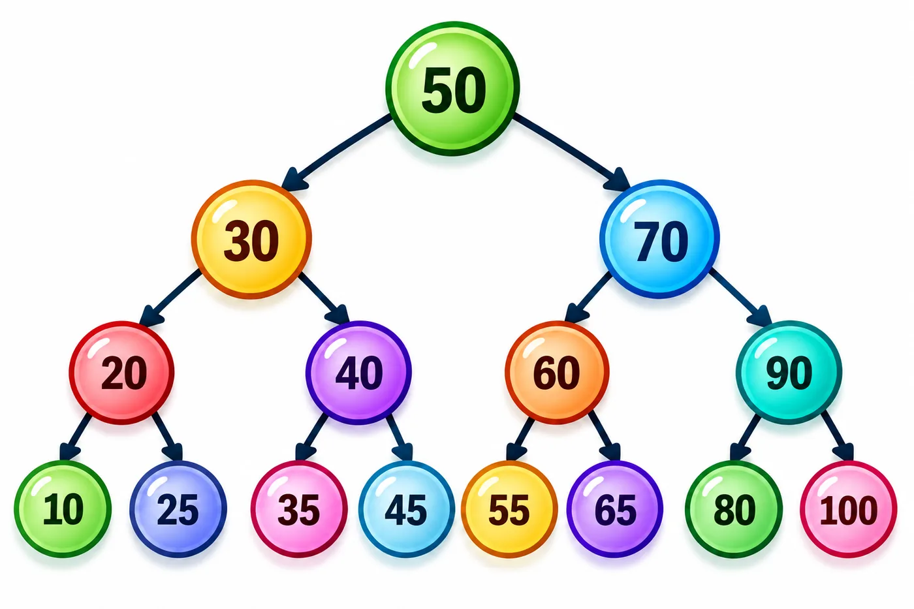

Videos y simuladores interactivos de ABB, recorridos y AVL
🌳Observa, experimenta y recorre el árbol paso a paso.

Recursos del Tema 4:
esta página concentra los materiales audiovisuales y los tres simuladores interactivos de Árboles.
Los videos se reproducen dentro del sitio y los simuladores reutilizan el mismo archivo
arboles_interactivo.js del tema principal.
🎬
Videos de apoyo · Árboles
Reproduce los videos directamente desde esta página. Los materiales están alojados en Google Drive
y se muestran embebidos para que el alumno no salga del sitio.
Árboles Binarios
Introducción y funcionamiento de los árboles binarios y Árboles Binarios de Búsqueda.
Árboles AVL · Optimización
Balanceo, eficiencia y optimización mediante árboles AVL.
🧪
Simulador de Árbol Binario de Búsqueda
Inserta, busca o elimina claves enteras. Después de cada operación se muestra el árbol resultante
y una explicación de las comparaciones realizadas.
Rápido · 0.25 s2.50 s / pasoLento · 5.00 s
Árbol vacío.
Observa:
el ABB no se balancea automáticamente. Si insertas valores ordenados, por ejemplo
10, 20, 30, 40 y 50, podrás ver cómo se forma un árbol degenerado.
▶️
Simulador animado de recorridos
Presiona Cargar ejemplo para construir el árbol. Después selecciona un recorrido y observa cómo se visita
cada nodo. El nodo actual se resalta y la secuencia se construye paso a paso.
Rápido · 0.25 s2.50 s / pasoLento · 5.00 s
Cargando motor del simulador…
🧪
Simulador de Árbol AVL
Inserta o elimina valores. El simulador muestra las comparaciones, calcula el factor de equilibrio
y explica cada rotación aplicada para recuperar el balance.
Rápido · 0.25 s2.50 s / pasoLento · 5.00 s
Árbol AVL vacío.
Observa:
después de cada inserción o eliminación el simulador recalcula altura y FE.
Solo realiza una rotación cuando |FE| supera 1.
💡
RECURSOS DEL TEMA
Utiliza primero el simulador ABB para comprender inserción, búsqueda y eliminación;
después practica los tres recorridos y finalmente observa cómo un AVL reorganiza el árbol
mediante rotaciones para mantener el balance.